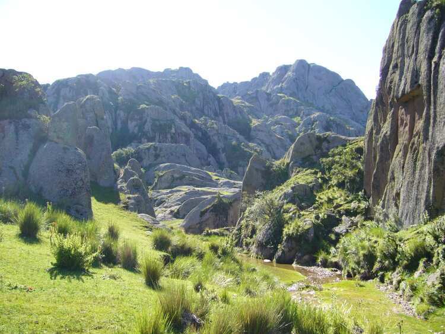

Actividades
Los Gigantes
Sendero muy técnico y con zonas de mucho peligro. Iniciamos el sendero en la calle S. Pedro En Tamaimo, conectamos con el sendero TF 65 a la izquierda bajando unos 200m nos desviamos a la derecha para subir al canal, lo seguimos hasta llegar al primer túnel, paso de los Sauces 1 de 1200m de longitud a la salida seguimos por el canal, donde nos encontramos con un paisaje impresionante, a la derecha parte alta tenemos el Risco Blanco y a la izquierda el Barranco Mancha los Diaz. Avanzamos unos dos kms por el canal hasta llegar al segundo túnel, paso Los Sauces 2, este se encuentra con puertas cerradas a ambos lados pero se puede acceder por un pequeño hueco, este tunel tiene una longitud de 1100m a la salida nos encontramos con el Barranco del Natero avanzamos unos 200m y descendemos al cauce del barranco seguimos unos 300m siguiendo unos majones, fijarse bien porque llegas a un sendero a la derecha que nos lleva paralelamente al cauce del barranco con unas vistas impresionantes,al llegar a la galería cogemos la ruta del canal con zonas de mucho peligro( no apto para personas con vértigo a las alturas) seguimos unos 4 km con unos paisajes maravillosos de la playa de Barranco Seco. Llegamos al último paso, Los Topos, a su salida tenemos una maravillosa vista de Los Gigantes, descendemos con mucho cuidado, terreno muy resbaladizo, llegamos a un cruce en el sendero, nosotros hemos entrado a la derecha para entrar a la zona del tubo (zona muy, muy peligrosa) volvemos por donde hemos venido hasta llegar al sendero de frente que nos llevará hasta Los Gigantes, Calle Tabaiba.